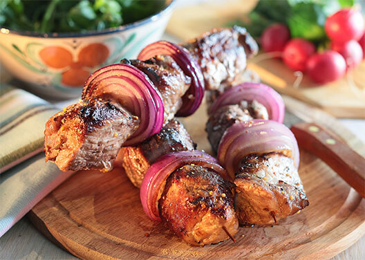

Как разжечь газовый гриль?
Разумеется, различные модели имеют некоторые отличия в конструкции, поэтому перед использованием необходимо ознакомиться с инструкцией по эксплуатации. Общие правила таковы. Сначала нужно открыть крышку, чтобы выветрить газ. Затем следует открыть вентиль газового баллона (или обеспечить доступ природного газа) и подождать минуту, когда газ пойдет по трубкам. Теперь нужно поджечь горелки и установить регуляторы на максимальную мощность. После этого следует закрыть крышку гриля и прогреть его в течение 10–15 минут.
Разумеется, различные модели имеют некоторые отличия в конструкции, поэтому перед использованием необходимо ознакомиться с инструкцией по эксплуатации. Общие правила таковы. Сначала нужно открыть крышку, чтобы выветрить газ. Затем следует открыть вентиль газового баллона (или обеспечить доступ природного газа) и подождать минуту, когда газ пойдет по трубкам. Теперь нужно поджечь горелки и установить регуляторы на максимальную мощность. После этого следует закрыть крышку гриля и прогреть его в течение 10–15 минут.
Что делать, если чувствуется запах газа?
Запах газа может свидетельствовать об его утечке в газовом шланге или месте его присоединения. Выключите горелки и перекройте вентиль газового баллона (или регулятор доступа природного газа). Затем отсоедините газовый шланг, а через несколько минут подсоедините его вновь. Затем снова включите гриль. Если вы снова почувствуете запах газа, следует обратиться к производителю.
Разумеется, различные модели имеют некоторые отличия в конструкции, поэтому перед использованием необходимо ознакомиться с инструкцией по эксплуатации. Общие правила таковы. Сначала нужно открыть крышку, чтобы выветрить газ. Затем следует открыть вентиль газового баллона (или обеспечить доступ природного газа) и подождать минуту, когда газ пойдет по трубкам. Теперь нужно поджечь горелки и установить регуляторы на максимальную мощность.

Что делать, если чувствуется запах газа?
Запах газа может свидетельствовать об его утечке в газовом шланге или месте его присоединения. Выключите горелки и перекройте вентиль газового баллона (или регулятор доступа природного газа). Затем отсоедините газовый шланг, а через несколько минут подсоедините его вновь. Затем снова включите гриль. Если вы снова почувствуете запах газа, следует обратиться к производителю.